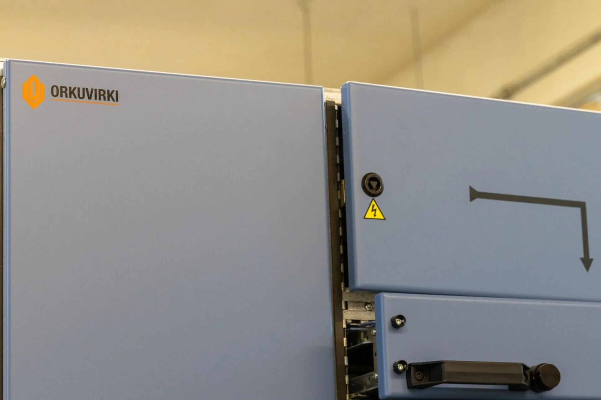
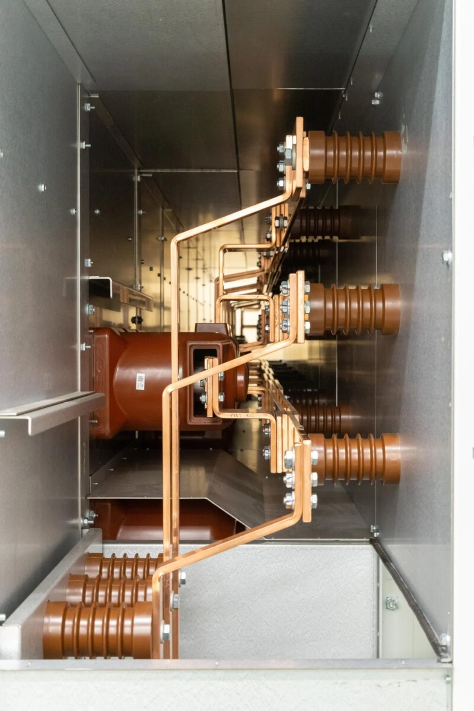
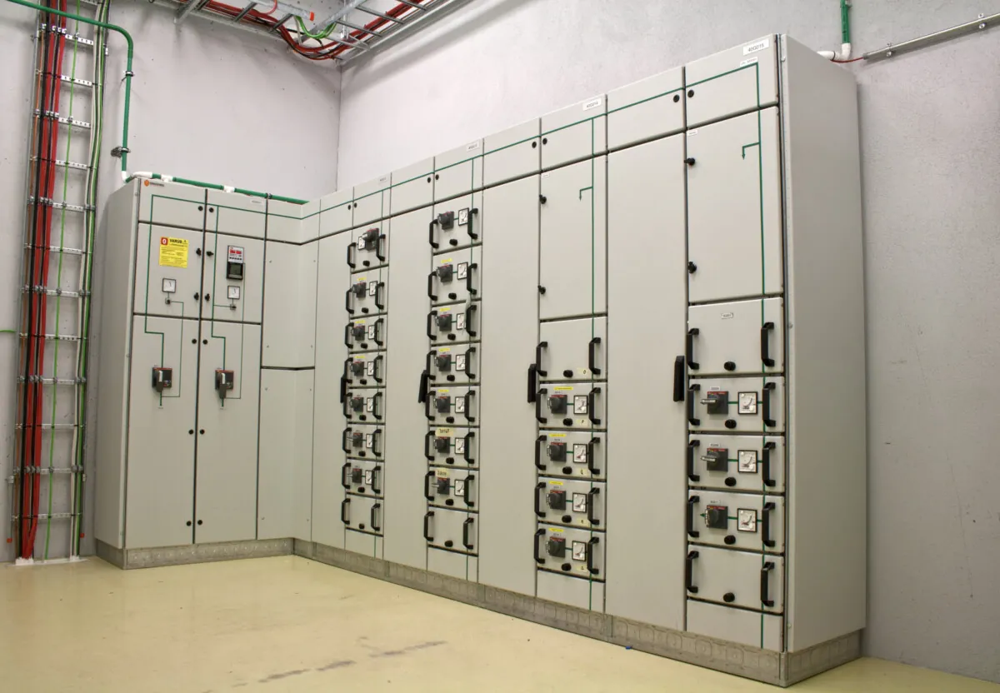
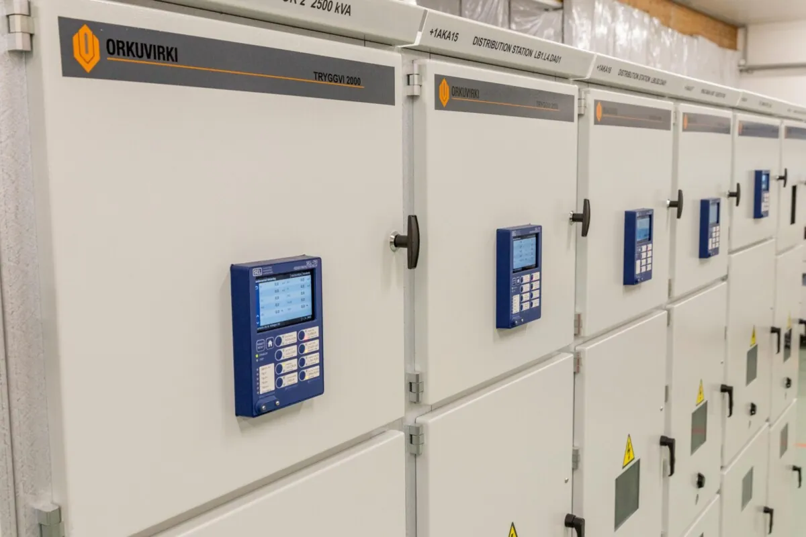
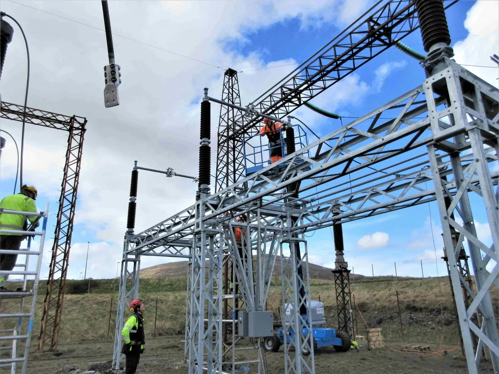
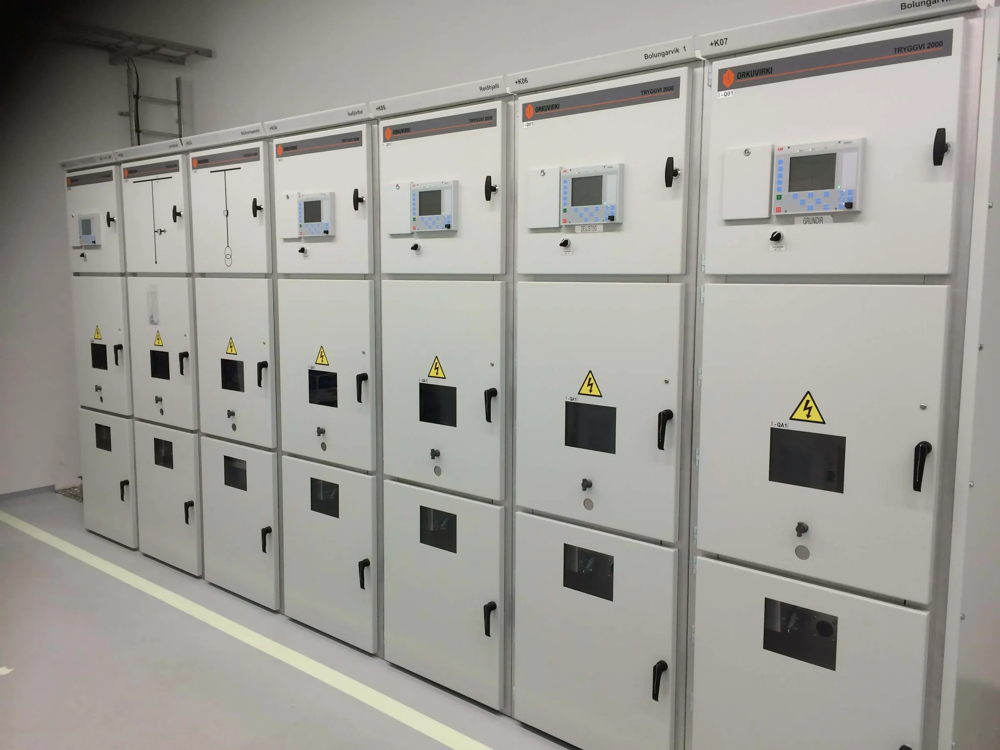
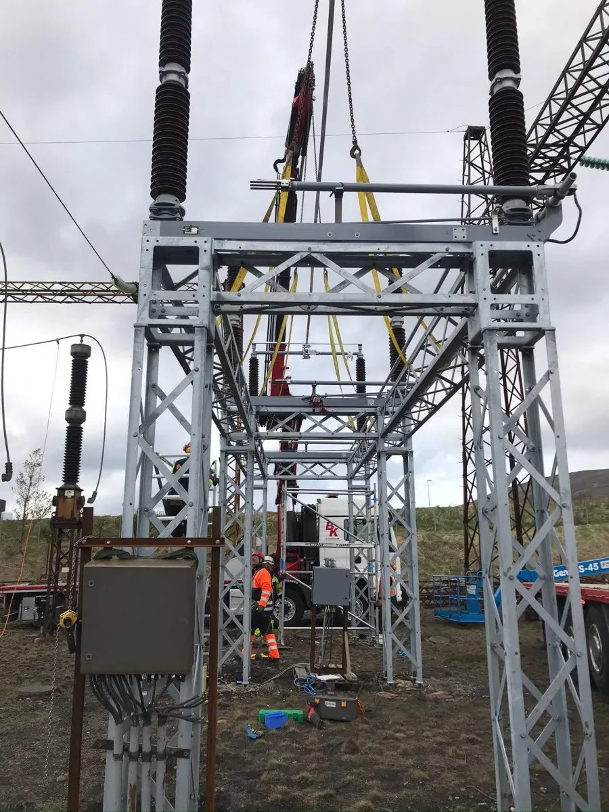

Eigin framleiðsla
og uppsetning
Eigin framleiðsla er einkum gerðarprófaðir aflrofaskápar fyrir háspennu, 12 kV.
Sérfræðingar
í raforkukerfum
Stofnað 1975Löggiltur rafverktaki með A- og B-löggildingu
Orkuvirki er tækni- og verktakafyrirtæki með vörur og þjónustu fyrir veitur, orkuframleiðendur og iðnað.

Eigin framleiðsla og uppsetning
Eigin framleiðsla er einkum gerðarprófaðir aflrofaskápar fyrir háspennu, 12 kV.
Orkuvirki
Orkuvirki er tækni- og verktakafyrirtæki með vörur og þjónustu fyrir veitur, orkuframleiðendur og iðnað. Hjá fyrirtækinu starfar fjölbreyttur hópur sérfræðinga; verk- og tæknimenntaðir, iðnaðarmenn og sérhæfðir verkamenn.
Okkar meginstoðir
-
01
Lágspennuskápar
Orkuvirki flytur inn skápaefni frá Eaton-Holec

-
02
Millispennu-aflrofaskápar
Eigin framleiðsla Orkuvirki á TRYGGVI 2000 fyrir aðveitustöðvar og dreifistöðvar

-
03
Stjórn- og varnarbúnaður og samskiptagáttir
Undanfarin ár hefur hluti stjórn- og varnarbúnaðar orðið sífellt stærri hluti í verkum Orkuvirkis.

-
04
Verktakar
Orkuvirki tekur að sér verk fyrir verkkaupa, annað hvort sem sjálfstæður verktaki eða sem undirverktaki fyrir aðra.

-
05
Þjónusta
Orkuvirki býður upp á fjölbreytta tækni og verktaka þjónustu þegar kemur að háspennu og lágspennu.



Millispennu-aflrofaskápar
Eigin framleiðsla Orkuvirki á TRYGGVI 2000 fyrir aðveitustöðvar og dreifistöðvar
TRYGGVI 2000

Endurnýjun á 220 kV rofareit fyrir Elkem, 2020
Verktakar
Orkuvirki tekur að sér verk fyrir verkkaupa, annað hvort sem sjálfstæður verktaki eða sem undirverktaki fyrir aðra. Fyrirtækið er löggiltur rafverktaki í samræmi við íslenskar reglur þar um, með A- og B-löggildingu. Helsti styrkur fyrirtækisins liggur í mannauð og reynslu og fá rétta aðila til samstarfs hverju sinni um verkefnin sem liggja fyrir.
Orkuvirki er tæknifyrirtæki með mikla sérfræðiþekkingu þegar kemur að tengivirkjum, spennistöðvum, dreifistöðvum, veitukerfum og iðnaði ýmiskonar. Fyrirtækið hefur hefur komið að hönnun virkja og stöðva frá upphafi verkefna og einnig sinnt breytingum sem verða í tímans rás með þróun tæknibúnaðar.
Vörðurnar okkar
Myndræn saga Orkuvirkis
- 1975Orkuvirki stofnað sem rafverktaka fyrirtæki
- 1992Orkuvirki setur á markað fyrstu kynslóð 12 kV rofaskápa
- 1994Orkuvirki að fullu í eigu Tryggva Þórhallssonar
- 2000Orkuvirki setur á markað aðra kynslóð 12 kV rofaskápa
- 2000Orkuvirki orðið öflugt tækni- og verktaka fyrirtæki
- 2003Orkuvirki í eigu 3 starfsmanna
- 2016Orkuvirki fær ISO 9001 vottun
- 2017Orkuvirki framúrskarandi fyrirtæki 5. árið í röð að mati Creditinfo
- 2020Orkuvirki í eigu 5 starfsmanna
- 2021Orkuvirki fær ISO 14001 og 45001 vottun og er framúrskarandi fyrirtæki að mati Creditinfo
- 2022Orkuvirki fær jafnlaunastaðfestingu
Hafa samband
Vinsamlegast hafðu samband á orkuvirki@orkuvirki.is, við svörum fljótt og vel.